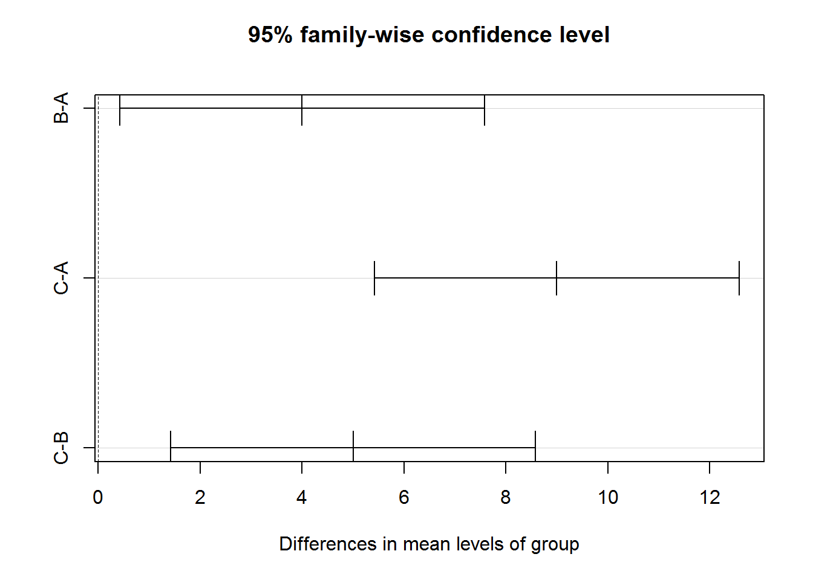
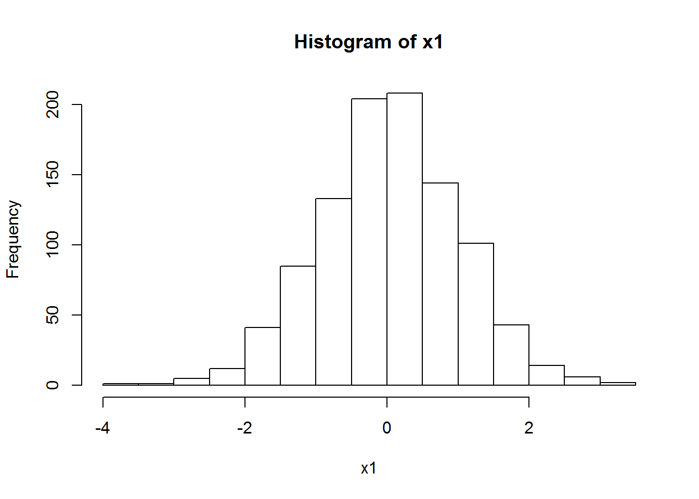
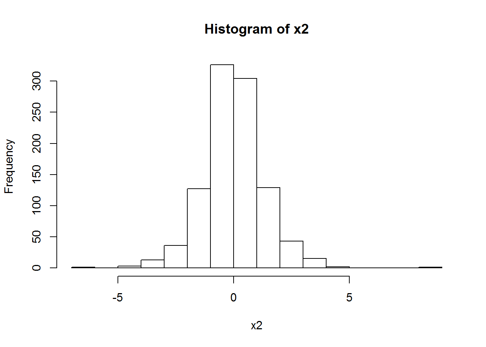
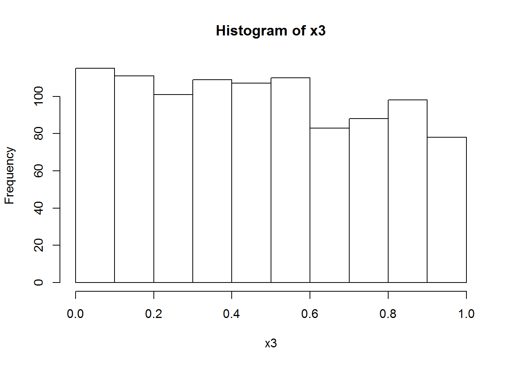
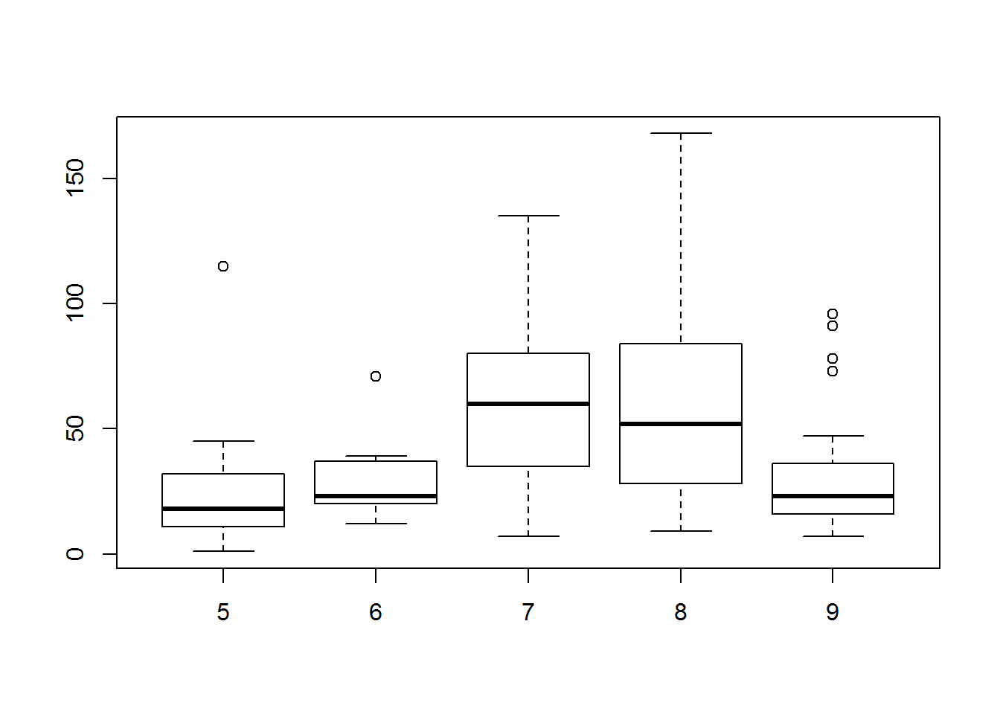
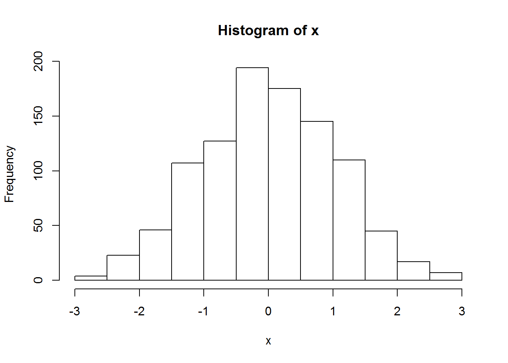
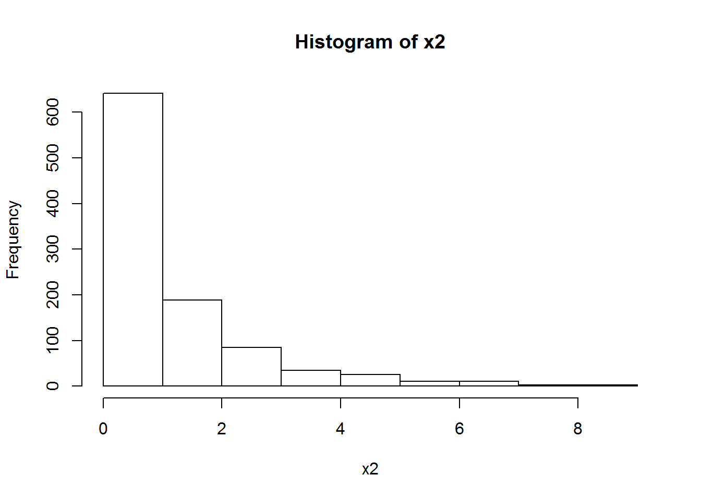
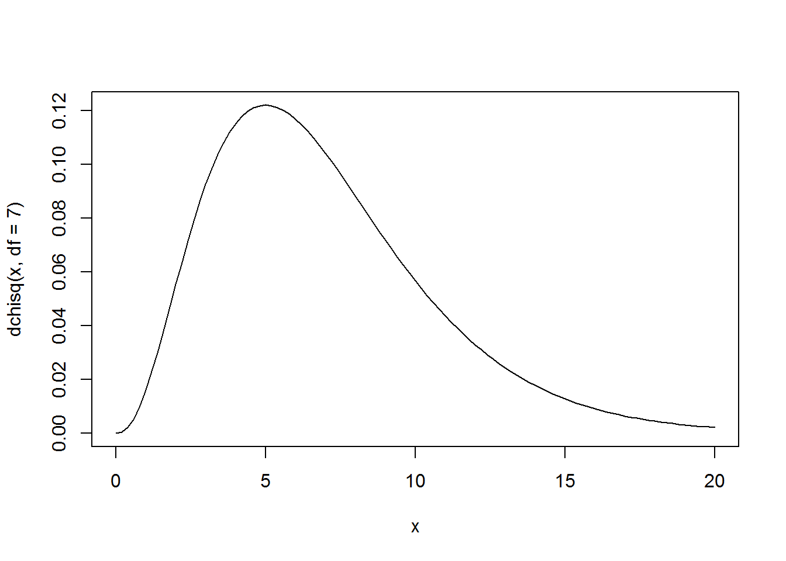
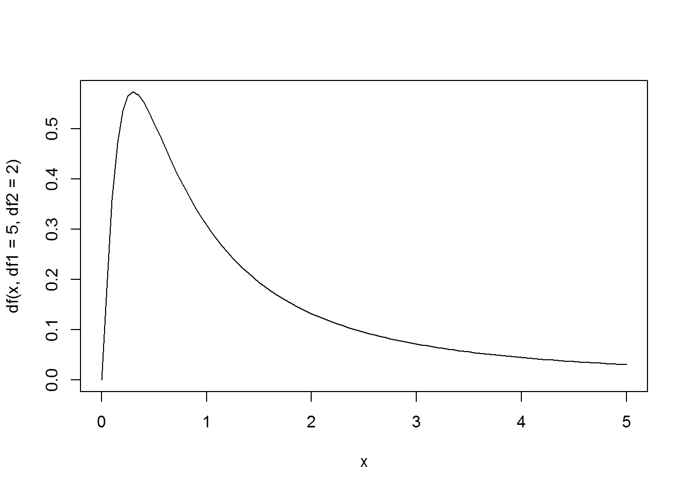

4 Analysis of Variance
Analysis of variance (ANOVA)
4.1 Hypothesis Testing
4.1.1 Problem
Test whether employees experience different levels of stress under normal, announced layoff, and during layoff.
4.1.2 Solution
A <- c(2,3,7,2,6)
B <- c(10,8,7,5,10)
C <- c(10,13,14,13,15)
stress <- c(A,B,C)
group <- c(rep("A",5),rep("B",5),rep("C",5))
df <- data.frame(stress,group)
m <- aov(stress~group,data = df)
m## Call:
## aov(formula = stress ~ group, data = df)
##
## Terms:
## group Residuals
## Sum of Squares 203.3333 54.0000
## Deg. of Freedom 2 12
##
## Residual standard error: 2.12132
## Estimated effects may be unbalancedsummary(m)## Df Sum Sq Mean Sq F value Pr(>F)
## group 2 203.3 101.7 22.59 8.54e-05 ***
## Residuals 12 54.0 4.5
## ---
## Signif. codes: 0 '***' 0.001 '**' 0.01 '*' 0.05 '.' 0.1 ' ' 1TukeyHSD(m)## Tukey multiple comparisons of means
## 95% family-wise confidence level
##
## Fit: aov(formula = stress ~ group, data = df)
##
## $group
## diff lwr upr p adj
## B-A 4 0.4206853 7.579315 0.0286585
## C-A 9 5.4206853 12.579315 0.0000598
## C-B 5 1.4206853 8.579315 0.0075279plot(TukeyHSD(m))
qf(0.95,df1 = 2,df2 = 12)## [1] 3.885294pf(22.59,df1=2,df2=12,lower.tail = FALSE)## [1] 8.543239e-05s <- oneway.test(stress~group,data = df,var.equal = TRUE)
s##
## One-way analysis of means
##
## data: stress and group
## F = 22.593, num df = 2, denom df = 12, p-value = 8.539e-05summary(s)## Length Class Mode
## statistic 1 -none- numeric
## parameter 2 -none- numeric
## p.value 1 -none- numeric
## method 1 -none- character
## data.name 1 -none- characterstr(s)## List of 5
## $ statistic: Named num 22.6
## ..- attr(*, "names")= chr "F"
## $ parameter: Named num [1:2] 2 12
## ..- attr(*, "names")= chr [1:2] "num df" "denom df"
## $ p.value : num 8.54e-05
## $ method : chr "One-way analysis of means"
## $ data.name: chr "stress and group"
## - attr(*, "class")= chr "htest"4.2 Testing for Normality
4.2.1 Problem
You want a statistical test to determine whether your data sample is from a normally distributed population.
4.2.2 Solution
Use the shapiro.test function:
shapiro.test(x)
The output includes a p-value. Conventionally, p < 0.05 indicates that the population is likely not normally distributed whereas p > 0.05 provides no such evidence.
x1 <- rnorm(n = 1000)
hist(x1)
shapiro.test(x1)##
## Shapiro-Wilk normality test
##
## data: x1
## W = 0.99858, p-value = 0.6096x2 <- rt(1000,df = 5)
hist(x2)
shapiro.test(x2)##
## Shapiro-Wilk normality test
##
## data: x2
## W = 0.97218, p-value = 6.473e-13x3 <- runif(1000)
hist(x3)
shapiro.test(x3)##
## Shapiro-Wilk normality test
##
## data: x3
## W = 0.9564, p-value < 2.2e-164.3 Testing for Homogeneity
4.3.1 Problem
The population variances are assumed equal for each category (leveneTest() in car package)
4.3.2 Solution
Sample data with homogeneity
#Load packages
library(reshape2)
library(car)
#Creating example data
sample1 <- rnorm(20)
sample2 <- rnorm(20)
#Combine data
sample <- as.data.frame(cbind(sample1, sample2))
#Melt data
dataset <- melt(sample)## No id variables; using all as measure variableslibrary(knitr)
kable(dataset)| variable | value |
|---|---|
| sample1 | -0.7323438 |
| sample1 | -0.8769356 |
| sample1 | -0.3220532 |
| sample1 | -0.1090370 |
| sample1 | 0.4619248 |
| sample1 | 1.7343764 |
| sample1 | 0.6467355 |
| sample1 | 0.1372610 |
| sample1 | 0.7964171 |
| sample1 | 0.3915450 |
| sample1 | 1.4773767 |
| sample1 | -0.4684362 |
| sample1 | 1.3560134 |
| sample1 | 0.9284612 |
| sample1 | 0.2931870 |
| sample1 | -0.4429722 |
| sample1 | -0.2099631 |
| sample1 | 0.5829327 |
| sample1 | -0.2891349 |
| sample1 | 0.4960742 |
| sample2 | -1.5744385 |
| sample2 | 0.4692314 |
| sample2 | -0.6169788 |
| sample2 | 1.2825795 |
| sample2 | 1.0747879 |
| sample2 | 0.0379773 |
| sample2 | 1.2982679 |
| sample2 | 1.1165690 |
| sample2 | 0.9099767 |
| sample2 | 0.1942303 |
| sample2 | 0.3720209 |
| sample2 | 0.4728767 |
| sample2 | -1.3008057 |
| sample2 | 0.6372915 |
| sample2 | -0.2607134 |
| sample2 | -0.9039969 |
| sample2 | 1.0716720 |
| sample2 | 0.0608792 |
| sample2 | 0.8697348 |
| sample2 | -1.0424024 |
#Compute test
leveneTest(value ~ variable, dataset)## Levene's Test for Homogeneity of Variance (center = median)
## Df F value Pr(>F)
## group 1 0.571 0.4545
## 38Sample data without homogeneity
#Load packages
library(reshape2)
library(car)
#Creating example data
sample1 <- rnorm(20)
sample2 <- rnorm(20,mean = 100,sd = 10)
#Combine data
sample <- as.data.frame(cbind(sample1, sample2))
#Melt data
dataset <- melt(sample)## No id variables; using all as measure variableslibrary(knitr)
kable(dataset)| variable | value |
|---|---|
| sample1 | 0.5607869 |
| sample1 | -0.6210257 |
| sample1 | -0.5776208 |
| sample1 | 2.0505180 |
| sample1 | 2.9380507 |
| sample1 | -1.0606861 |
| sample1 | 0.5125207 |
| sample1 | -1.1021915 |
| sample1 | 0.1482437 |
| sample1 | 0.9991437 |
| sample1 | 0.2691766 |
| sample1 | 0.4971709 |
| sample1 | 0.1216224 |
| sample1 | -0.9970868 |
| sample1 | -1.3107840 |
| sample1 | -0.4868515 |
| sample1 | -1.2382844 |
| sample1 | 1.0007721 |
| sample1 | 0.9208793 |
| sample1 | -0.0926558 |
| sample2 | 103.7357442 |
| sample2 | 98.4326393 |
| sample2 | 95.8065096 |
| sample2 | 97.1655569 |
| sample2 | 95.5437524 |
| sample2 | 100.1936548 |
| sample2 | 102.9927656 |
| sample2 | 105.0621017 |
| sample2 | 109.7167045 |
| sample2 | 101.5971692 |
| sample2 | 103.5414275 |
| sample2 | 98.8358022 |
| sample2 | 98.3721011 |
| sample2 | 85.0360587 |
| sample2 | 102.4202034 |
| sample2 | 100.6305104 |
| sample2 | 93.5154516 |
| sample2 | 90.8655613 |
| sample2 | 110.0463412 |
| sample2 | 91.3013447 |
#Compute test
leveneTest(value ~ variable, dataset)## Levene's Test for Homogeneity of Variance (center = median)
## Df F value Pr(>F)
## group 1 19.872 7.104e-05 ***
## 38
## ---
## Signif. codes: 0 '***' 0.001 '**' 0.01 '*' 0.05 '.' 0.1 ' ' 14.4 Kruskal-Wallis Test
4.4.1 Problem
If the data deviate drastically from the assumptions, or if the p-value is close to \(\alpha\), then an alternative test that does not rely on the assumptions might be considered. Tests that do not make assumptions regarding how the underlying data are distributed are called nonparametric tests. The nonparametric test for testing the equality of means for two or more categories is the Kruskal–Wallis test. There is another set of circumstances for which the Kruskal–Wallis test is useful for testing hypotheses about a set of means – namely when only ranked (i.e., ordinal) data are available. In such situations, there is insufficient information to use ANOVA, which requires interval or ratio level data. (Recall that with interval and ratio data the magnitude of the difference between the observations is meaningful.)
4.4.2 Solution
For example, we want to know if the air quality vaires significantly by month?
library(graphics)
df <- airquality
boxplot(Ozone ~ Month, data = df)
kruskal.test(Ozone ~ Month, data = df)##
## Kruskal-Wallis rank sum test
##
## data: Ozone by Month
## Kruskal-Wallis chi-squared = 29.267, df = 4, p-value = 6.901e-064.5 Chi-squared Distribution
4.5.1 Definition
If \(X_{1},X_{2},…,X_{m}\) are \(m\) independent random variables having the standard normal distribution, then the following quantity follows a Chi-Squared distribution with \(m\) degrees of freedom. Its mean is \(m\), and its variance is \(2m\).
4.5.2 Solution
x <- rnorm(1000)
hist(x)
x2 <- x^2
hist(x2)
curve(dchisq(x,df=7),from = 0,to = 20)
qchisq(.95, df=7) # 7 degrees of freedom ## [1] 14.067144.6 F Distribution
4.6.1 Definition
If \(V_1\) and \(V_2\) are two independent random variables having the Chi-Squared distribution with \(m_1\) and \(m_2\) degrees of freedom respectively, then the following quantity follows an F distribution with \(m_1\) numerator degrees of freedom and \(m_2\) denominator degrees of freedom, i.e.,\((m_1,m_2)\) degrees of freedom.
4.6.2 Problem
Find the 95th percentile of the F distribution with (5, 2) degrees of freedom.
4.6.3 Solution
curve(df(x,df1 = 5,df2 = 2),from = 0,to = 5)
qf(.95, df1=5, df2=2)## [1] 19.29641